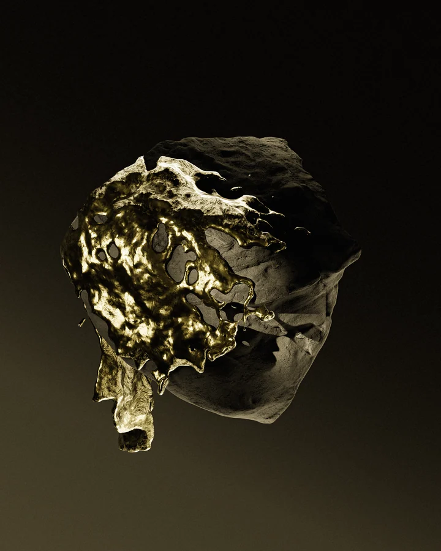
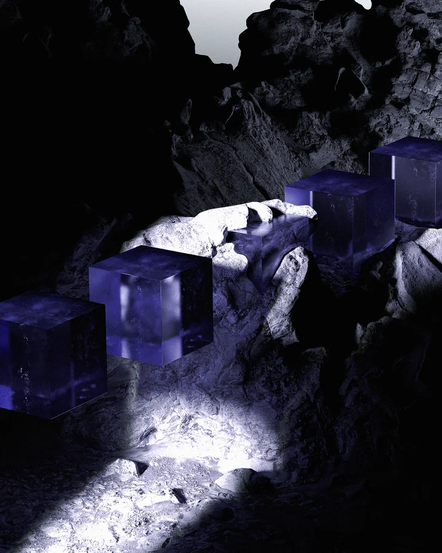

Understand the context
Listen carefully, read the source material and find the task that is worth solving.
SPECTRE / A PERSONAL PERSPECTIVE
I started Spectre around a belief: a complex idea becomes valuable when someone can understand it, use it and build on it. My work is about finding that clarity — and giving it a form that feels considered.
01 / The perspective
My perspective has been shaped between Ukraine and Switzerland, across corporate work, logistics, fintech and digitalisation.
That breadth matters to how I approach a brief. A product belongs to a larger context: the people using it, the knowledge behind it and the decisions it needs to support. I want to understand those connections before deciding what to build.
See the whole spectrum.
Build one clear system.
02 / The practice
My practical experience includes organising knowledge, writing rulebooks and shaping AI-assisted workflows for documents, reporting and analysis. Spectre brings that way of thinking into focused web product work.
Listen carefully, read the source material and find the task that is worth solving.
Connect the knowledge, the user journey and the scope of a first version.
Direct collaboration with me, one selected client at a time. Decisions remain close to the person doing the work.
The visual practice
I also work with CGI in Blender and Cinema 4D. Jewellery, product compositions and material studies are another part of my practice.
Explore selected visual work

03 / What I want to build
For me, the ambition behind Spectre goes beyond how something looks at launch. I want the thinking behind it to remain clear: why it exists, how it works and where it can go next.
That means treating the language, the structure and the experience with the same attention. Each is part of how an idea becomes useful to someone else.
Talk to me about your ideaThe hoodie began as a personal piece. When people started asking about it, I made it available to others.
Explore Apparel ↗